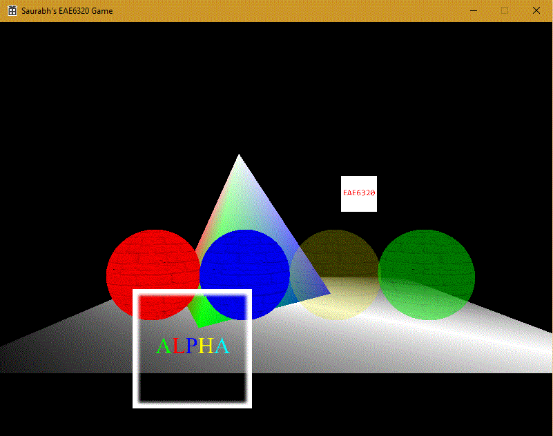
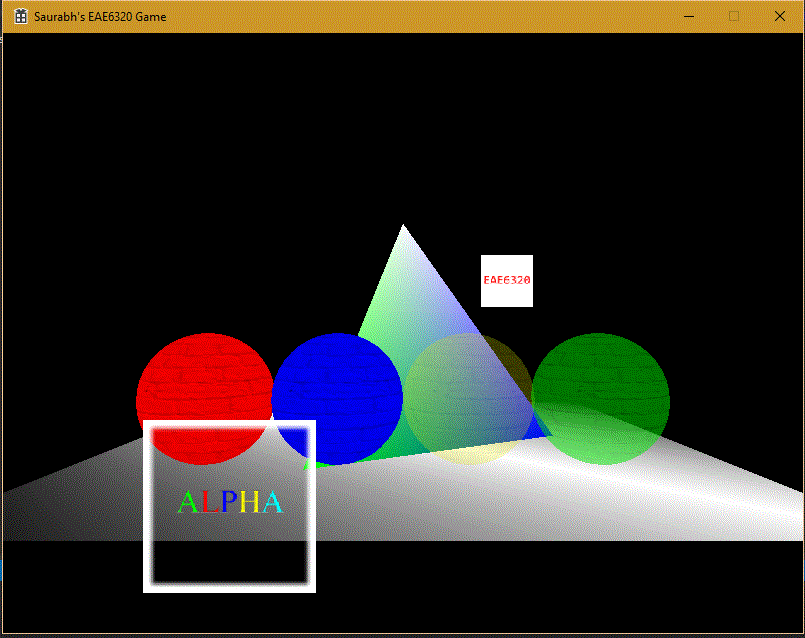
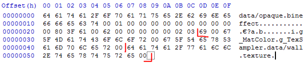

Textures
Assignment 13
This assignment is the penultimate assignment for the class EAE6320. For this one, we had to create textures to put on the objects in our scene, to make them pretty. Textures are the graphics term for an image. How they work will be explained later. For now compare the two screenshots, from Direct3D and OpenGL. They are noticably different. Direct3D is more sharp while OpenGL is smooth.
Direct3D

OpenGL

Textures
Textures are an extension to the concept of Materials. Adding a texture is like pasting a wallpaper over a wall, the wallpaper being the texture, wall being the mesh and the paint on the wall being the material. Texture is an image which is wrapped on a mesh, to change its look. On disk, textures are basically images in .png or .jpf format. You can open them using an image viewer, and edit them using an image editor. THe magic of putting a texture on a mesh happens in the mesh itself. Each mesh has a set of 2 values called texture co-ordinates. This co-ordinates map the realation between the image and the corresponding vertex on the mesh. When rendering a mesh, the graphics card, refers to the point on the texture file pointed by the texture co-ordinates in the vertex. This color is then drawn on to the screen. In this way, you can make a mesh look pretty without having to change the individual vertex colors.
Linking with Materials
Each material is associated with at least one texture. To use the texture in the shader code, it requires a Sampler ID along with the texture file. These two pieces of data are stored in the material file. The binary file as shown alongside, contains the two strings. First string is the Sampler ID uniform name in the shader, and the second is the relative path to the texture file.
While running, the code looks for the uniform with Sampler ID name in the shader code. Different implementations are shown below.
Direct3D
SamplerID Effect::GetSamplerID(const char * i_Name) {
UniformHandle handle = fragmentShaderConstantTable->GetConstantByName(NULL, i_Name);
return static_cast(fragmentShaderConstantTable->GetSamplerIndex(handle));
}
OpenGL
SamplerID Effect::GetSamplerID(const char * i_Name) {
return glGetUniformLocation(s_programId, i_Name);
}

Texture in code
I decided to create the Texture as a class, since all the other componenets are classes as well. Making a class is always better in my opinion, as it results in a easy expansion of functionalities without having to refactor the code. And john-Paul did mention about us needing multiple textures next class. Using a class is easy to expand upon, by creating an array of texture objects. Also, OpenGL requires a unique ID for every texture. This is easily achieved with the use of a static variable.
class Texture
{
#if defined EAE6320_PLATFORM_GL
GLuint m_Texture;
GLint m_SamplerID;
static uint8_t s_Count;
uint8_t m_TextureUnit;
#elif defined EAE6320_PLATFORM_D3D
IDirect3DTexture9 * m_Texture;
DWORD m_SamplerID;
#endif //Platform Check
public:
Texture() {}
bool LoadTexture(const char * path, SamplerID samplerID);
void BindTexture();
void Release();
};
Controls
- Use the (Arrow keys) to move the camera on XZ plane.
- Use W, A, S and D to move the pyramid on the XY plane.
- Press Q and E to rotate the pyramid counter-clockwise or clockwise respectively.
- Press ESC to exit the game.
Time Estimate
Reading: 1 hour
Coding: 3 hours
Debugging: 1 hour
Writeup: 1 hour
Download Links
Download Direct3D
Download OpenGL